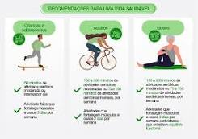

- Atividade física e exercício físico são diferentes?
dicas para uma vida saudavel

Atividade física e exercício físico são diferentes?
Atividade física é qualquer movimento corporal que promove
um/p> gasto energético maior do que se o corpo estivesse em repouso.
Já o exercício físico é uma atividade física mais planejada e
estruturada de acordo com um objetivo.
Exercício físico também é alimento para o corpo e a alma.
exercícios físicos não fortalece somente o corpo, mas também a mente e a alma